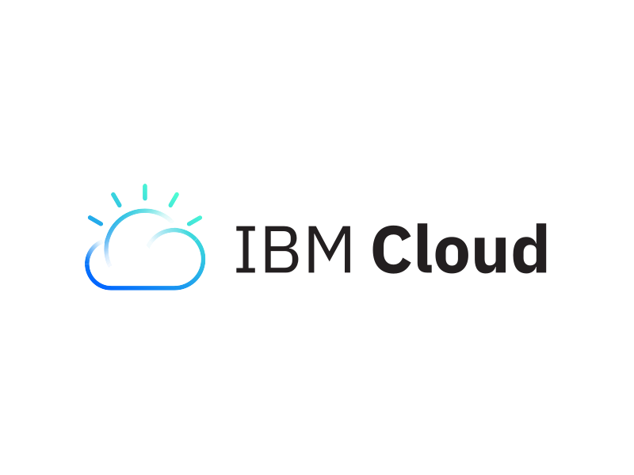
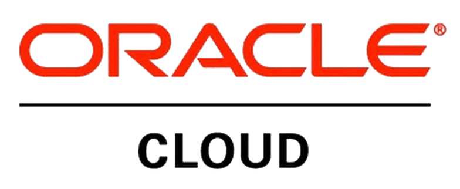
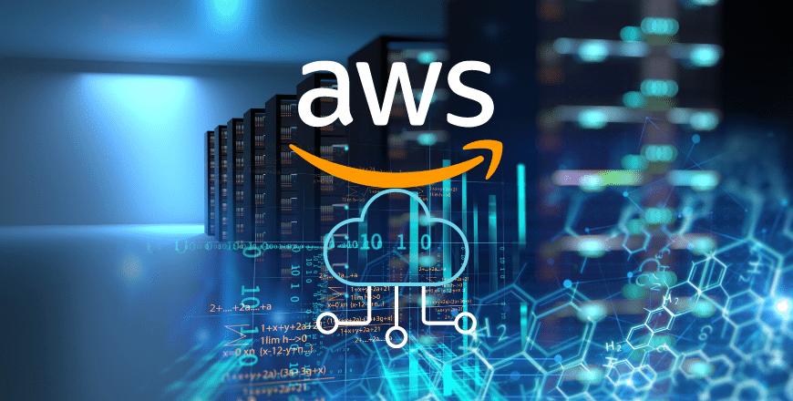

Multi-Cloud Ecosystem
One Cloud Strategy. Every Platform.
Architecting, securing, governing and optimizing workloads across the world's leading cloud platforms.





Amazon Web Services
Enterprise cloud modernization with resilient architectures, migration expertise, governance, and continuous optimization.
Microsoft Workloads on AWS
(SQL Server, AD, .NET)
SAP on AWS with agility,
cost savings & scalability
High-Performance Tally on AWS
AWS Media Services
(OTT & live streaming delivery)
Tally on AWS
(high-availability cloud ERP access)
Next Gen Data & AI,
Cybersecurity & Resilience Services on AWS